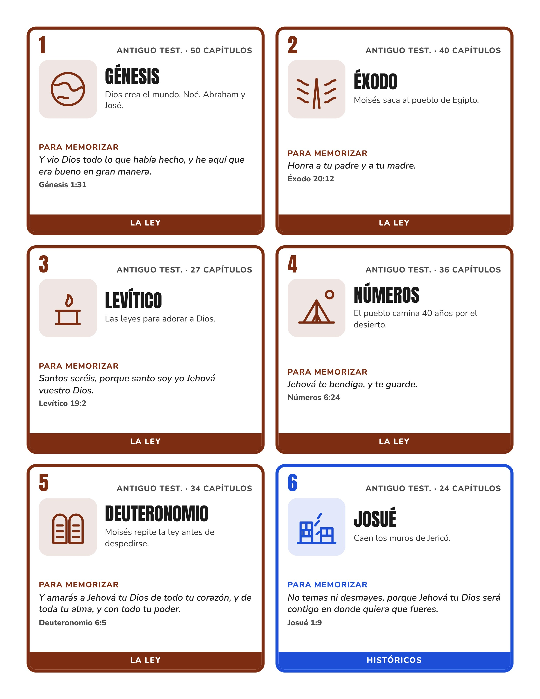
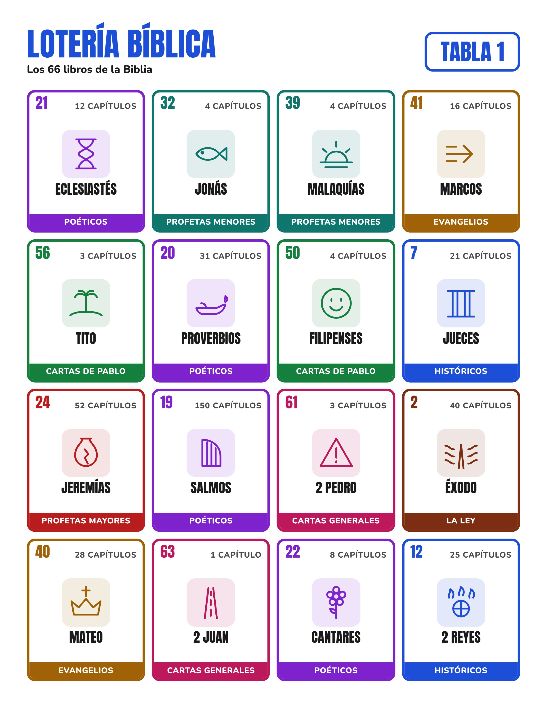

JUEGO PARA LA CLASE
Lotería bíblica
Los 66 libros de la Biblia en una lotería: 66 cartas para cantar, una por libro, con su dibujo, su número, cuántos capítulos tiene, una pista y un texto para memorizar. Además, 8 tablas de 16 libros para que jueguen hasta 8 niños o parejas.
Cómo se juega
- Cada niño o pareja recibe una tabla y un puño de fichas (frijolitos, botones o papelitos).
- El que canta revuelve las cartas y saca una por una.
- Primero lee la pista. Quien adivine el libro gana un punto extra para su equipo.
- Luego dice el nombre del libro, y el que lo tenga en su tabla lo marca.
- Gana el primero que complete la figura acordada y grite “¡Lotería!”.
Formas de ganar
Una línea (horizontal, vertical o diagonal), las cuatro esquinas, el cuadro del centro o la tabla llena.
Para reforzar
Con los grandes: antes de marcar, que digan si el libro es del Antiguo o del Nuevo Testamento, o qué libro va antes y cuál después. Con los chicos: que busquen el libro por el color de su grupo. Al terminar cada ronda, el ganador lee en voz alta el texto para memorizar de una carta y todos lo repiten.
Para imprimir
Imprime en cartulina tamaño carta al 100 %. Recorta las cartas; las tablas se usan completas.

